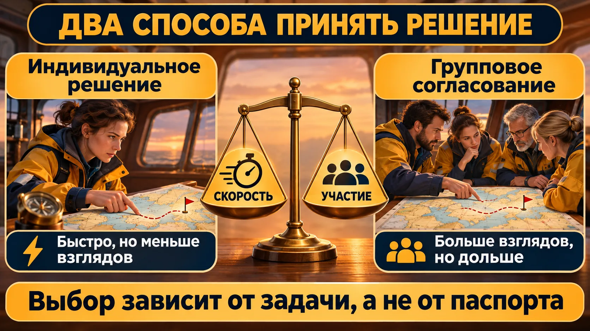
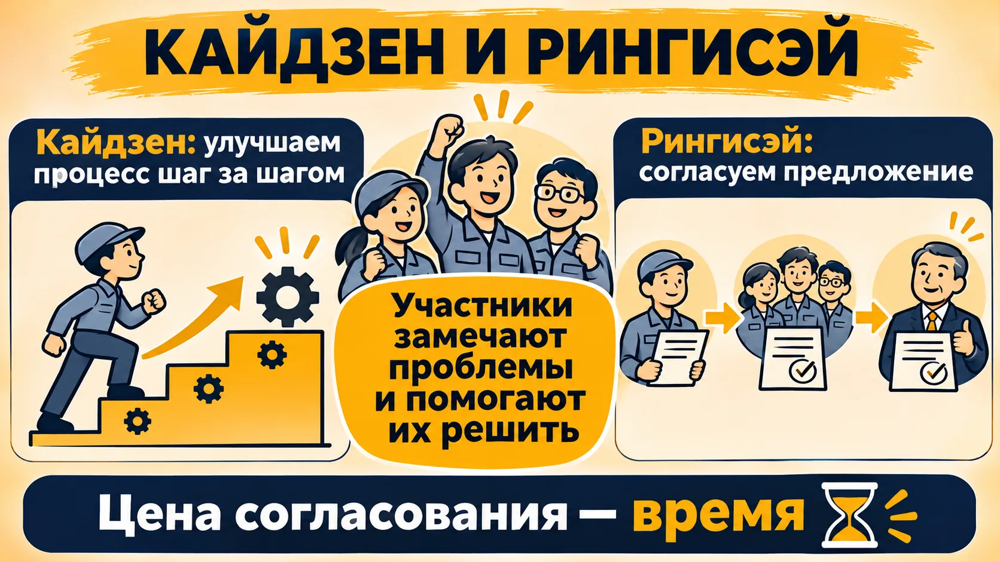
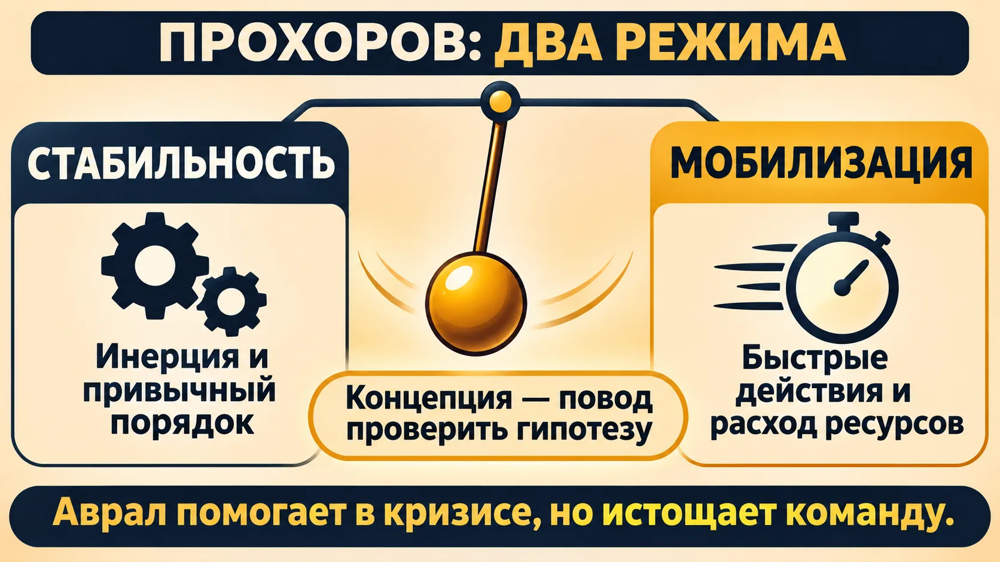
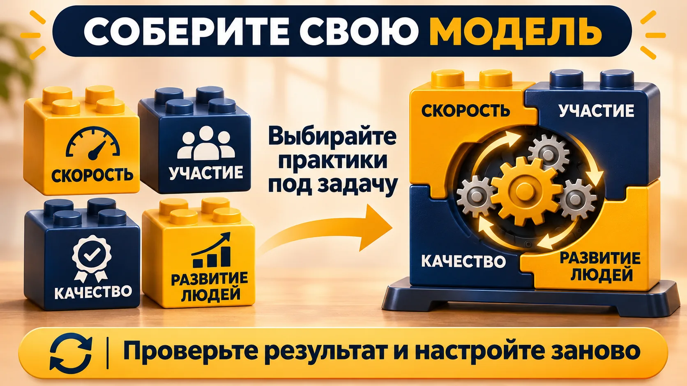
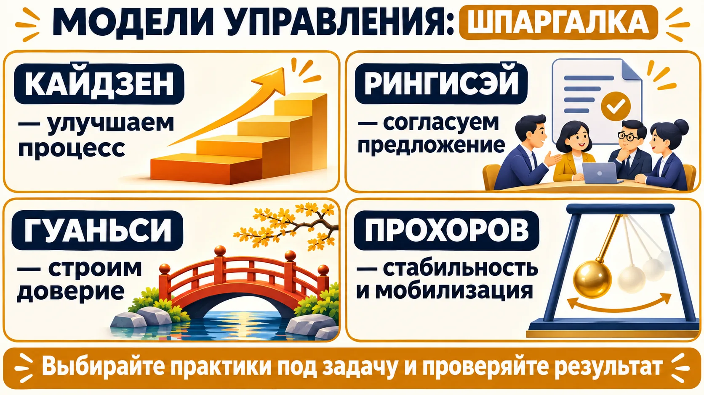

США и Япония: два полюса сравнения

В лекции американский подход описан через индивидуальную ответственность, скорость и ориентацию на результат. Японский — через участие группы, долгосрочные отношения и качество. Это учебные полюса: внутри каждой страны компании и люди различаются.
Быстрое решение полезно, когда цена задержки высока и ответственному достаточно информации. Согласование помогает привлечь знания исполнителей и подготовить внедрение, но требует времени. Выбирайте процедуру по задаче.
🧭 Долгосрочный найм в Японии
На лекции речь шла о пожизненном найме как исторической практике. ➕ Дополнение: исследование МОТ указывает, что длительная занятость не охватывала всех работников, особенно в небольших фирмах.
🛠 Перед решением определите срок, того, кто утверждает, и тех, чьи знания действительно нужны.
⚠️ Групповое решение не гарантирует отсутствия ошибок; быстрый руководитель не обязательно игнорирует команду.
Кайдзен, рингисэй и карьера

Кайдзен — постоянное улучшение: заметить проблему, предложить небольшое изменение, проверить результат и закрепить удачное. Рингисэй — обсуждаемая на лекции процедура прохождения и согласования предложения через уровни организации.
В примере наладчик замечает поломки оборудования из-за скачков напряжения и предлагает решение. Его рассматривают исполнители и руководители, после чего утверждённое изменение внедряют. Выигрыш — участие людей, знающих процесс; цена — длительность согласования.
🧭 Кайдзен на практике
➕ Дополнение: Toyota описывает кайдзен как непрерывное улучшение в сочетании с участием сотрудников. История Toyota.
🧭 Что такое принцип Питера?
Лоренс Питер описал риск продвижения за успех на предыдущей работе до должности, где новых навыков уже не хватает. Это повод проверять требования новой роли, а не оценка личности.
🛠 Выберите один повторяющийся сбой: запишите причину, проверяемое изменение, ответственного и дату оценки.
⚠️ Кайдзен — улучшение, а рингисэй — согласование; это не синонимы.
Китай: отношения и управленческое решение
Преподаватель обсуждала централизацию, семейный бизнес и гуаньси — сеть личных связей и взаимных обязательств. Долгие отношения могут поддерживать доверие и сотрудничество; при этом договорённости и ответственность по конкретной сделке важно формулировать ясно.
💬 В лекции прозвучало обобщение о патерналистском руководителе. Оно помогает обсуждать определённый стиль, но не описывает все китайские организации.
🛠 Проверьте, кто действительно принимает решение, какие сроки и критерии важны партнёру и как стороны подтвердят обязательства.
⚠️ Страна происхождения не доказывает ни стиль руководства, ни надёжность партнёра.
Прохоров: стабильность и мобилизация

Александр Петрович Прохоров в книге «Русская модель управления», изложенной преподавателем, сопоставляет два режима: стабильность с инерцией привычных процессов и мобилизацию с быстрыми действиями и интенсивным расходом ресурсов. Переход между ними образно сравнивается с маятником.
💬 Преподаватель связывала концепцию с историей и климатом и одновременно отмечала спорность её объяснений. Это исследовательская интерпретация, а не доказанный закон поведения всех организаций.
🛠 Посмотрите на свою команду: какие задачи действительно кризисные, какие сроки и ресурсы им выделены и когда команда вернётся к обычной работе?
⚠️ Аврал может помочь справиться с исключительной ситуацией, но его нельзя считать бесплатным и бесконечным ресурсом.
Соберите гибридную модель
🛠 Сначала придумайте сами. Вы руководите командой, которой нужно быстро повысить качество услуги. Какие три управленческие практики вы выберете? Как поймёте, что они сработали? Запишите ответ до просмотра схемы.

Гибридная модель сочетает практики под конкретную задачу. Например, руководитель быстро назначает владельца проблемы, команда предлагает улучшения, а результат проверяют через две недели. Ни один элемент не обязан приходить в организацию вместе со всей «национальной моделью».
💬 В лекции Apple, Toyota и Google названы как примеры сочетания различных практик; это иллюстрации преподавателя, а не аудит этих компаний.
🛠 Опишите текущий процесс → определите цель и ограничения → выберите 2–3 элемента → назначьте срок проверки и измеримый результат → скорректируйте решение.
⚠️ Если сотрудники участвуют в обсуждении, заранее объясните, кто принимает окончательное решение.
Модель условная: она помогает сравнить время встреч при разных настройках, а не предсказывает качество решения.
Что выучить к аттестации
Отметки сохраняются в браузере.
Все пункты отмечены.
Проверьте себя
1. Что означает кайдзен?
2. Что показывает рингисэй?
3. Что такое гуаньси?
4. Какое утверждение о национальной модели верно?
5. В чём риск принципа Питера?
6. Как использовать концепцию Прохорова?
7. Зачем формировать гибридную модель?
8. Какой минус возможен при широком согласовании?
Отвечено: 0 / 8
Шпаргалка

- Кайдзен: улучшайте процесс постоянно.
- Рингисэй: согласуйте предложение с теми, кто влияет на результат.
- Гуаньси: развивайте доверие и выполняйте обязательства.
- Прохоров: различайте стабильность и мобилизацию, проверяя применимость идеи.
- Гибрид: выберите практики, измерьте результат, скорректируйте.
Источник: лекция 12.11.2026. Дополнения отмечены и снабжены ссылками; оценки преподавателя отделены от фактов.